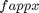
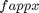

funappx_g
1-D guaranteed locally adaptive function approximation (or function recovery) on [a,b]
Contents
Syntax
fappx = funappx_g(f)
fappx = funappx_g(f,a,b,abstol)
fappx = funappx_g(f,'a',a,'b',b,'abstol',abstol)
fappx = funappx_g(f,in_param)
[fappx, out_param] = funappx_g(f,...)
Description
fappx = funappx_g(f) approximates function f on the default interval [0,1] by an approximated function handle fappx within the guaranteed absolute error tolerance of 1e-6. When Matlab version is higher or equal to 8.3, fappx is an interpolant generated by griddedInterpolant. When Matlab version is lower than 8.3, fappx is a function handle generated by ppval and interp1. Input f is a function handle. The statement y = f(x) should accept a vector argument x and return a vector y of function values that is of the same size as x.
fappx = funappx_g(f,a,b,abstol) for a given function f and the ordered input parameters that define the finite interval [a,b], and a guaranteed absolute error tolerance abstol.
fappx = funappx_g(f,'a',a,'b',b,'abstol',abstol) approximates function f on the finite interval [a,b], given a guaranteed absolute error tolerance abstol. All four field-value pairs are optional and can be supplied in different order.
fappx = funappx_g(f,in_param) approximates function f on the finite interval [in_param.a,in_param.b], given a guaranteed absolute error tolerance in_param.abstol. If a field is not specified, the default value is used.
[fappx, out_param] = funappx_g(f,...) returns an approximated function fappx and an output structure out_param.
Input Arguments
- f --- input function
- in_param.a --- left end point of interval, default value is 0
- in_param.b --- right end point of interval, default value is 1
- in_param.abstol --- guaranteed absolute error tolerance, default value is 1e-6
Optional Input Arguments
- in_param.nlo --- lower bound of initial number of points we used, default value is 10
- in_param.nhi --- upper bound of initial number of points we used, default value is 1000
- in_param.nmax --- when number of points hits the value, iteration will stop, default value is 1e7
- in_param.maxiter --- max number of iterations, default value is 1000
Output Arguments
- fappx --- approximated function handle (Note: When Matlab version is higher or equal to 8.3, fappx is an interpolant generated by griddedInterpolant. When Matlab version is lower than 8.3, fappx is a function handle generated by ppval and interp1.)
- out_param.f --- input function
- out_param.a --- left end point of interval
- out_param.b --- right end point of interval
- out_param.abstol --- guaranteed absolute error tolerance
- out_param.nlo --- a lower bound of initial number of points we use
- out_param.nhi --- an upper bound of initial number of points we use
- out_param.nmax --- when number of points hits the value, iteration will stop
- out_param.maxiter --- max number of iterations
- out_param.ninit --- initial number of points we use for each sub interval
- out_param.exit --- this is a number defining the conditions of success or failure satisfied when finishing the algorithm. The algorithm is considered successful (with out_param.exit == 0) if no other flags arise warning that the results are certainly not guaranteed. The initial value is 0 and the final value of this parameter is encoded as follows:
- 1 If reaching overbudget. It states whether the max budget is attained without reaching the guaranteed error tolerance.
- 2 If reaching overiteration. It states whether the max iterations is attained without reaching the guaranteed error tolerance.
- out_param.iter --- number of iterations
- out_param.npoints --- number of points we need to reach the guaranteed absolute error tolerance
- out_param.errest --- an estimation of the absolute error for the approximation
- out_param.nstar --- final value of the parameter defining the cone of functions for which this algorithm is guaranteed for each subinterval; nstar = ninit-2 initially
Guarantee
For ![$[a,b]$](help_funappx_g_eq50527.png) , there exists a partition
, there exists a partition
![$$ P=\{[t_0,t_1], [t_1,t_2], \ldots, [t_{L-1},t_L]\}, a=t_0 < t_1 < \cdots < t_L=b.$$](help_funappx_g_eq46427.png)
If the function to be approximated,  satisfies the cone condition
satisfies the cone condition

for each sub interval ![$[t_{l-1},t_l]$](help_funappx_g_eq57133.png) , where
, where  , then the  |output by this algorithm is guaranteed to satisfy
, then the  |output by this algorithm is guaranteed to satisfy

Examples
Example 1
f = @(x) x.^2; [fappx, out_param] = funappx_g(f) % Approximate function x^2 with default input parameter to make the error % less than 1e-6.
fappx =
griddedInterpolant with properties:
GridVectors: {[1x3169 double]}
Values: [1x3169 double]
Method: 'linear'
ExtrapolationMethod: 'linear'
out_param =
f: @(x)x.^2
a: 0
b: 1
abstol: 1.0000e-06
nlo: 10
nhi: 1000
nmax: 10000000
maxiter: 1000
ninit: 100
exit: [2x1 logical]
iter: 6
npoints: 3169
errest: 2.7429e-07
nstar: [1x32 double]
Example 2
[fappx, out_param] = funappx_g(@(x) x.^2,0,100,1e-7,10,1000,1e8) % Approximate function x^2 on [0,100] with error tolerance 1e-7, cost % budget 10000000, lower bound of initial number of points 10 and upper % bound of initial number of points 100
fappx =
griddedInterpolant with properties:
GridVectors: {[1x977921 double]}
Values: [1x977921 double]
Method: 'linear'
ExtrapolationMethod: 'linear'
out_param =
a: 0
abstol: 1.0000e-07
b: 100
f: @(x)x.^2
maxiter: 1000
nhi: 1000
nlo: 10
nmax: 100000000
ninit: 956
exit: [2x1 logical]
iter: 11
npoints: 977921
errest: 3.7104e-08
nstar: [1x1024 double]
Example 3
clear in_param; in_param.a = -20; in_param.b = 20; in_param.nlo = 10; in_param.nhi = 100; in_param.nmax = 1e8; in_param.abstol = 1e-7; [fappx, out_param] = funappx_g(@(x) x.^2, in_param) % Approximate function x^2 on [-20,20] with error tolerance 1e-7, cost % budget 1000000, lower bound of initial number of points 10 and upper % bound of initial number of points 100
fappx =
griddedInterpolant with properties:
GridVectors: {[1x385025 double]}
Values: [1x385025 double]
Method: 'linear'
ExtrapolationMethod: 'linear'
out_param =
a: -20
abstol: 1.0000e-07
b: 20
f: @(x)x.^2
maxiter: 1000
nhi: 100
nlo: 10
nmax: 100000000
ninit: 95
exit: [2x1 logical]
iter: 13
npoints: 385025
errest: 2.6570e-08
nstar: [1x4096 double]
Example 4
clear in_param; f = @(x) x.^2; [fappx, out_param] = funappx_g(f,'a',-10,'b',50,'nmax',1e6,'abstol',1e-7) % Approximate function x^2 with error tolerance 1e-7, cost budget 1000000, % lower bound of initial number of points 10 and upper % bound of initial number of points 100
fappx =
griddedInterpolant with properties:
GridVectors: {[1x474625 double]}
Values: [1x474625 double]
Method: 'linear'
ExtrapolationMethod: 'linear'
out_param =
a: -10
abstol: 1.0000e-07
b: 50
f: @(x)x.^2
maxiter: 1000
nhi: 1000
nlo: 10
nmax: 1000000
ninit: 928
exit: [2x1 logical]
iter: 10
npoints: 474625
errest: 6.0849e-08
nstar: [1x512 double]
See Also
References
[1] Nick Clancy, Yuhan Ding, Caleb Hamilton, Fred J. Hickernell, and Yizhi Zhang, The Cost of Deterministic, Adaptive, Automatic Algorithms: Cones, Not Balls, Journal of Complexity 30, pp. 21-45, 2014.
[2] Yuhan Ding, Fred J. Hickernell, and Sou-Cheng T. Choi, Locally Adaptive Method for Approximating Univariate Functions in Cones with a Guarantee for Accuracy, working, 2015.
[3] Sou-Cheng T. Choi, Yuhan Ding, Fred J. Hickernell, Lan Jiang, Lluis Antoni Jimenez Rugama, Xin Tong, Yizhi Zhang and Xuan Zhou, GAIL: Guaranteed Automatic Integration Library (Version 2.1) [MATLAB Software], 2015. Available from http://code.google.com/p/gail/
[4] Sou-Cheng T. Choi, MINRES-QLP Pack and Reliable Reproducible Research via Supportable Scientific Software, Journal of Open Research Software, Volume 2, Number 1, e22, pp. 1-7, 2014.
[5] Sou-Cheng T. Choi and Fred J. Hickernell, IIT MATH-573 Reliable Mathematical Software [Course Slides], Illinois Institute of Technology, Chicago, IL, 2013. Available from http://code.google.com/p/gail/
[6] Daniel S. Katz, Sou-Cheng T. Choi, Hilmar Lapp, Ketan Maheshwari, Frank Loffler, Matthew Turk, Marcus D. Hanwell, Nancy Wilkins-Diehr, James Hetherington, James Howison, Shel Swenson, Gabrielle D. Allen, Anne C. Elster, Bruce Berriman, Colin Venters, Summary of the First Workshop On Sustainable Software for Science: Practice And Experiences (WSSSPE1), Journal of Open Research Software, Volume 2, Number 1, e6, pp. 1-21, 2014.
If you find GAIL helpful in your work, please support us by citing the above papers, software, and materials.